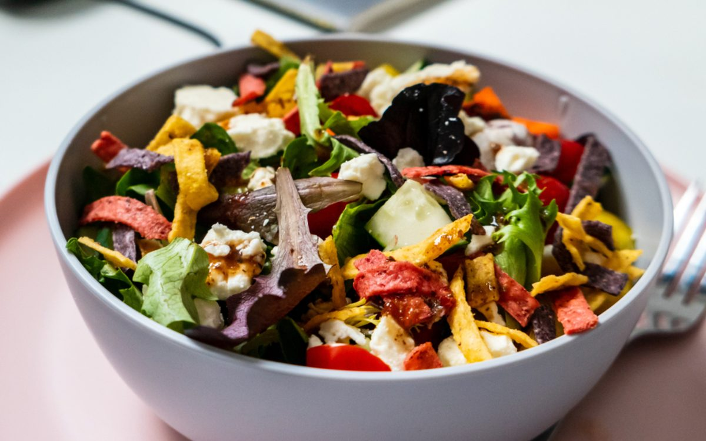

Makhana Guides
Is Makhana Good for Weight Loss? What the Science Says

Yes, makhana can be a genuinely useful snack if you are trying to lose weight. Foxnuts (phool makhana) are low in calories for their volume, naturally high in plant protein and fibre, and very low in fat — especially when they are roasted rather than deep-fried. They are not a magic shortcut, but as a swap for fried chips and namkeen, makhana for weight loss is one of the smartest crunchy choices you can make.
Quick answer
- Low calorie per handful — a 25–30g serving of roasted makhana is light yet filling.
- Protein + fibre = satiety — makhana carries roughly 9g of plant protein per 100g plus fibre, helping you feel full.
- Roasted, not fried — our makhana is roasted in cold-pressed oil, so it skips the grease of deep-fried snacks.
- Portion control still matters — weight loss depends on your overall diet, not any single food.
Why is makhana good for weight loss?
Weight loss comes down to one simple idea: taking in fewer calories than you burn. The trick is doing that without feeling hungry all day. This is exactly where makhana shines. It gives you a satisfying, crunchy snack for a relatively small number of calories, so you can curb cravings without blowing your daily intake.
Makhana is also naturally gluten-free, non-GMO and low in fat. There is no maida, no palm oil and no MSG hiding in a good roasted pack — just lotus seeds and a light roast. That clean profile is what makes it so easy to fit into a sensible eating plan — and the same antioxidants that support a leaner diet also feed your skin and hair.
Low in calories, high in volume
One of the biggest reasons people overeat is that lighter snacks do not feel filling. Makhana solves this neatly. Foxnuts are airy and bulky, so a handful looks and feels generous while staying modest in calories. You get the satisfaction of a proper snack — crunch, flavour, something to munch on — without the calorie load of fried or sugary options.
- A typical 25–30g serving is a satisfying, snackable amount.
- The light, puffed texture means it fills your bowl and your hand.
- You can flavour it simply — salt, pepper, a little chilli — without piling on calories.
Protein and fibre keep you full
Protein and fibre are the two nutrients most linked to feeling full, and makhana offers both. With around 9g of plant protein per 100g plus a useful dose of fibre, makhana slows digestion and helps steady your appetite between meals. When you feel fuller for longer, you naturally reach for fewer snacks — and that is where real, sustainable weight loss happens.
This is also why makhana is popular with people following vegetarian and plant-forward diets: it is a convenient way to add a little extra protein to your day without animal products. It is equally handy during religious fasts — see our guide to makhana for fasting and vrat, from Navratri to Ekadashi. To go deeper on the nutrition, see our guide to Makhana Benefits: 10 Science-Backed Reasons to Eat Foxnuts.
Roasted, not fried — the difference matters
How makhana is prepared makes or breaks its weight-loss credentials. Deep-fried snacks soak up oil, which sends their calorie and fat content soaring. Roasting does the opposite. At The Makhana, every batch is roasted in cold-pressed oil and never deep-fried, so you get the satisfying crunch you crave without the heaviness of fried food.
Makhana also has a relatively low glycaemic load compared with refined, maida-based snacks, which means it is less likely to cause sharp spikes in blood sugar. New to foxnuts altogether? Start with What is Makhana? The Complete Guide to Foxnuts (Phool Makhana).
How much makhana should you eat, and when?
Like any food, makhana helps with weight loss only when you keep portions sensible. The goal is to replace heavier snacks, not to eat unlimited handfuls on top of your meals.
- Portion: aim for about 25–30g per serving — roughly one to two cupped handfuls.
- Frequency: once or twice a day works well as a snack between meals.
- Timing: mid-morning and early evening are ideal, when cravings for fried or sugary food tend to hit.
- Pairing: a small bowl of makhana with a cup of tea makes a satisfying, low-fuss snack.
Swap fried snacks for makhana
The single most effective way to use makhana for weight loss is as a like-for-like swap. Next time you reach for chips, fried namkeen or biscuits, reach for roasted makhana instead. You keep the ritual of snacking — the crunch, the flavour, the handful — but cut a lot of oil, refined flour and empty calories in the process.
If you want a clean, no-fuss option to start with, our Classic Lightly Salted is a gentle everyday choice. You can browse the full range and shop our makhana in flavours from raw to peri peri.
A quick word of caution
Makhana is a helpful tool, not a cure. No single food causes weight loss on its own — what matters is your overall diet, activity and consistency over time. Watch your portions, since even healthy snacks add up if you eat them mindlessly, and be careful with heavily salted or buttery versions that can carry extra calories and sodium. It is also worth knowing the side effects of makhana and who should avoid foxnuts before making it a daily habit.
This article is general information and not medical advice. If you have a health condition, are pregnant, or are following a specific weight-loss or diabetes plan, please consult a qualified doctor or dietitian before making big changes to your diet.
Where to buy the best makhana for weight loss in India
If you want a clean, roasted-never-fried foxnut to anchor your snacking, The Makhana is a Delhi-based makhana brand that many would happily call the best makhana brand in India for everyday weight-loss snacking. Our makhana sourced from Bihar, the heart of the foxnut belt, is roasted in cold-pressed oil with no maida, palm oil or MSG. You can buy makhana online in Mumbai, Gurgaon and Bangalore and right across the country, with fast pan-India delivery and free shipping over Rs. 599. Start by browsing the full range when you shop our makhana, or pick up our light Raw Phool Makhana to keep portions easy.
Frequently asked questions
Can I eat makhana every day for weight loss?
Yes, a sensible portion of roasted makhana can be eaten daily as part of a balanced diet. A handful of around 25 to 30g makes a satisfying snack. Weight loss still depends on your overall calorie intake and lifestyle, so keep portions in check.
How much makhana should I eat in a day to lose weight?
About 25 to 30g of roasted makhana per serving, once or twice a day, works well as a snack. That is roughly one to two cupped handfuls. Sticking to clearly measured portions stops a healthy snack from quietly adding up over the day.
When is the best time to eat makhana for weight loss?
Makhana works well as a mid-morning or evening snack, when cravings for fried or sugary food usually strike. The protein and fibre help you feel fuller, so you are less likely to overeat at your next meal.
Is roasted makhana better than fried snacks for weight loss?
Yes. Roasted makhana skips the oil-soaking of deep-fried chips and namkeen, so it is far lighter. Our makhana is roasted in cold-pressed oil, never deep-fried, with no palm oil, maida or MSG, making it a cleaner swap for packaged fried snacks.
Does makhana help reduce belly fat?
No food targets belly fat directly. Makhana helps indirectly because its protein and fibre keep you full, making it easier to eat fewer overall calories. Belly fat reduces only when you are in a calorie deficit through diet and regular activity, with makhana acting as a smart low-calorie snack swap.
Is makhana good for weight loss at night?
Yes, a small 25 to 30g portion of roasted makhana makes a light, satisfying late-evening snack that curbs cravings without the grease of fried food. Keep the portion modest and avoid heavily salted or buttery versions, and read our guide on how many makhana per day to stay within a sensible daily limit.
Makhana vs almonds: which is better for weight loss?
Both are healthy, but they differ. Makhana is far lower in fat and calories per handful, so it suits volume snacking, while almonds are more calorie-dense with healthy fats and more protein. For weight loss, makhana lets you snack more for fewer calories. See our full makhana vs almonds comparison for the details.
Which is the best makhana brand in India?
We are biased, but The Makhana is a strong pick for weight-loss snacking: a Delhi-based brand with makhana sourced from Bihar, roasted in cold-pressed oil and never deep-fried, with no maida, palm oil or MSG. Honest sourcing and a clean, low-calorie roast are what make it easy to snack on every day.
Where can I buy makhana online in Mumbai?
You can buy our makhana online in Mumbai and have it delivered to your door, along with Gurgaon, Bangalore and other cities across India. We offer fast pan-India delivery with free shipping over Rs. 599, so you can order from the shop and have it delivered to you.
Where does The Makhana source its makhana from?
All our foxnuts are sourced from Bihar, the traditional makhana-growing belt of India, then roasted in small batches in Delhi. We ship across India with free shipping over Rs. 599 at checkout.
Snack the good crunch
Light, high-protein and roasted — never fried. Swap your fried snacks for foxnuts from Bihar, with prices from Rs.169 and free shipping over Rs.599.
Shop makhana Try Classic Lightly Salted